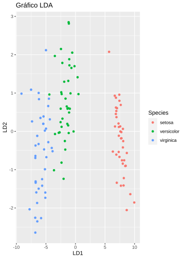

Capítulo 24 Análisis discriminante
Mª Leticia Meseguer Santamaría
24.1 Introducción
El análisis discriminante es una técnica de dependencia, donde se establece la relación entre una única variable dependiente cualitativa o categórica, cuyas clases identifican a los grupos preexistentes, y un conjunto de variables independientes cuantitativas, denominadas clasificadoras o predictoras. Su objetivo es clasificar individuos en distintos grupos preexistentes, a partir de la información de un conjunto de variables clasificadoras, la información se sintetiza en lo que se denominan funciones discriminantes. Por tanto, se identifican dos finalidades: la descriptiva, caracterizar la separación entre grupos, determinando la contribución de cada variable clasificadora a la separación de los individuos; y la predictiva, dónde se clasificará un individuo nuevo.
Dependiendo de sus características se diferencian varios casos:
Dos grupos y una variable clasificadora:
Es el supuesto más simple, son dos grupos (I y II) y un conjunto de individuos para clasificar a partir de la información de una sola variable. En este caso las distribuciones en los grupos I y II solo difieren en la media, Como se muestra en la Figura 24.1.
Figura 24.1: Dos grupos y una variable clasificadora
El punto de corte (C) es: \[\begin{equation} C=\frac{\overline{x_I}+\overline{x_{II}}}{2} \end{equation}\]
Y el criterio de asignación para cada individuo: \[\begin{equation} Si\ \ X_i<C \in grupo\ \ I\ \ y\ \ si\ \ X_i>C \in grupo\ \ II \end{equation}\]
El error que podamos cometer depende del nivel de solapamiento de las dos distribuciones.
Dos grupos y p variables clasificadoras:
El objetivo es encontrar un criterio que permita separar los dos grupos. Para ello se necesita obtener la función discriminante de Fisher, que se plantea como una combinación lineal de las p variables clasificadoras: \[\begin{equation} D=u_1X_1+u_2X_2+...+u_pX_p \end{equation}\] La punturación discriminante del individuo i-ésimo es: \[\begin{equation} D_i=u_1X_{1i}1+u_2X_{2i}+...+u_pX_{pi} \end{equation}\] Se trata de obtener el valor teórico como combinación lineal de las variables clasificadoras que mejor discriminen entre los grupos definidos a priori, por lo tanto, la función discriminante que maximiza las variabilidad entre-grupos respecto de la intra-grupos.
El punto de corte (C) se obtiene evaluando la función discriminante en cada grupo y promediando: \[\begin{equation} D_I=u_1X_{1I}1+u_2X_{2I}+...+u_pX_{pI} \end{equation}\] \[\begin{equation} D_{II}=u_1X_{1II}1+u_2X_{2II}+...+u_pX_{pII} \end{equation}\] \[\begin{equation} C=\frac{\overline{D_I}+\overline{D_{II}}}{2} \end{equation}\]
Y el criterio de asignación para cada individuo será: \[\begin{equation} Si \ \ D_i<C \in grupo\ \ I\ \ y \ \ si \ \ D_i>C \in grupo \ \ II \end{equation}\]
G grupos y p variables:
Se obtinen más de una función discriminante, concretamente, el mínimo de g-1 y p.
Esta matriz no es simétrica, por lo que las funciones no son ortogonales.
El resultado proporcionará las funciones discriminantes que maximizan la variabilidad entre-grupos respecto de la intra-grupos, indicando la importancia relativa de cada una, de tal forma que la primera función será la que más discrimine, la segunda, discriminará menos y ,así, hasta la última.
24.2 Tipos de análisis discriminantes:
LDA, Análisis discriminante lineal:
Es el que se ha visto hasta ahora, las variables predictoras (p) están distribuidas normalmente y las clases tienen varianzas idénticas (si p=1) o matrices de covarianza idénticas (si p>1).
QDA, Análisis discriminante cuadrático:
Elimina el supuesto de que la matriz de covarianzas sea la misma para cada clase, por lo que aumenta su fiabilidad; ahora, se calculará para cada función discriminante k (k=1,2, 3….) y no se descartan los términos cuadráticos, por lo tanto, la función discriminante tendrá términos de segundo orden.
La función discriminate viene dada por: \[\begin{equation} \delta_k(x)=\frac{1}{2}log|\Sigma_k|-\frac{1}{2}(x-\mu_k)^T\Sigma_k^{-1}(x-\mu_k)+\log\Pi_k \end{equation}\]
Donde \(\Sigma_k\) es la matriz de covarianzas.
La regla de clasificación es: \[\begin{equation} G=\underset{x}{\operatorname{argmax}}\delta_k(x) \end{equation}\]
Los límites de decisión son ecuaciones cuadráticas de x.
Se recomienda QDA si el conjunto de entrenamiento es grande o en el supuesto de que una matriz de covarianzas igual para todas las variables no sea sostenible.
MDA, Análisis discriminante mixto:
Cada clase es una mezcla normal de subclases, en la que cada grupo de datos tiene una probabilidad de pertenecer a cada clase. Se asume la igualdad de la matriz de covarianza entre clases.
24.3 Ejemplos:
A continuación, se indican los pasos a seguir en la realización del análisis y un ejemplo de cada tipo (lda, qda y mda) realizados con R
Etapas:
Carga de paquetes y librerías:
library(tidyverse)
library(caret)
library(MASS)—> Específica para los modelos LDA y QDA
library(klaR)—> Específicas para los modelos QDA
library (mda)—> Específica para el modelo MDA
Preparación de datos:
Se utilizará y cargará la base de datos iris, disponible para R, que consta de 150 observaciones y 5 variales, 4 numéricas, que serán las predictoras, y una categórica, sobre la que se realiza el análisis, con tres categorías: setosa, versicolor y virginica.
Se clasificarán las flores iris, identificadas con la variable Species (especies de iris), utilizando como variables predictoras: Sepal.Length (Longitud del sépalo), Sepal.Width (anchura del sépalo), Petal.Lenght (longitud del pétalo) y Petal.Width (anchura del pétalo).
Se dividen los datos entre la muestra, 80% para el entrenamiento y 20% para el test.
Para evitar distorsiones, es recomendable estandarizar las predictoras continuas, en R las variables categóricas se ignoran automáticamente.
Análisis: LDA, QDA y MDA
Las distribuciones univariadas deben estar distribuidas normalmente, si no fuera así, se deberán transformar utilizando rog y root (distribuciones exponenciales) y Box-Cox (distribuciones sesgadas).
Funciones lda, qda (del paquete MASS) y mda (del paquete mda), para calcular los modelos.
Resultados de lda, qda y mda:
Probabilidades previas (Prior probabilities of groups): Proporciones de cada grupo en el total de la muestra, en este caso, cada grupo un 33.33%.
Media de cada grupo (Group means): Proporciona las medias de cada grupo y establece para cada individuo la probabilidad de pertenecer a los grupos.
Coeficientes de discriminantes lineales (Coefficients of linear discriminants): Son los coeficientes de cada variable predictora con los que se configuran las funciones lineales, sirven para para establecer la regla de decisión.
Proporción de cada discriminante (Proportion of trace): El peso de cada función para discriminar.
Gráfica
Predicciones se uilizarán las funciones predict, para realizar predicciones, y table, para la tabla que indica la clasificación del modelo.
Precisión o ajuste del modelo, mediante la función mean se calculará la precisión clasificadora del modelo.
Resolución con R
> # Carga de librerías y datos
> library(tidyverse)
> library(caret)
> library(MASS)
> library(klaR)
> library(mda)
> data("iris")
>
> # División de los datos: 80% para entrenamiento y 20% para test
> set.seed(123)
> muestra <- iris$Species |>
+ createDataPartition(p = 0.8, list = FALSE)
> entrenamiento_d <- iris[muestra, ]
> test_d <- iris[-muestra, ]
>
> # Estimar parámetros de preprocesamiento (estandarizar)
> preproc_param <- entrenamiento_d |>
+ preProcess(method = c("center", "scale"))
>
> # Transformar los datos usando los parámetros estimados
> entrenamiento_t <- preproc_param |> predict(entrenamiento_d)
> test_t <- preproc_param |> predict(test_d)MODELO LDA
> # Estimación del modelo LDA
> modelo_lda <- lda(Species ~ ., data = entrenamiento_t)
> modelo_lda
Call:
lda(Species ~ ., data = entrenamiento_t)
Prior probabilities of groups:
setosa versicolor virginica
0.3333333 0.3333333 0.3333333
Group means:
Sepal.Length Sepal.Width Petal.Length Petal.Width
setosa -1.0112835 0.78048647 -1.2900001 -1.2453195
versicolor 0.1014181 -0.68674658 0.2566029 0.1472614
virginica 0.9098654 -0.09373989 1.0333972 1.0980581
Coefficients of linear discriminants:
LD1 LD2
Sepal.Length 0.6794973 0.04463786
Sepal.Width 0.6565085 -1.00330120
Petal.Length -3.8365047 1.44176147
Petal.Width -2.2722313 -1.96516251
Proportion of trace:
LD1 LD2
0.9902 0.0098
> # Probabilidades a priori: 0,3333 para cada grupo
> # Coeficientes y funciones discriminantes:
> # D1=0,6795*SL+0,6565*SW-3,8365*PL-2,2722*PW
> # D2=0,0446*SL-1,0033*SW+1,4418*PL-1,9651*PW
> # Proporción discriminar de D1 y D2, 0,9902 y 0,0098, respectivamente
>
> # Gráfico Modelo LDA
> datos_lda <- cbind(entrenamiento_t, predict(modelo_lda)$x)
> ggplot(datos_lda, aes(LD1, LD2)) +
+ geom_point(aes(color = Species)) +
+ ggtitle("Gráfico LDA")
>
> # Predicciones del modelo LDA
> predicciones_lda <- modelo_lda |> predict(test_t)
> table(test_t$Species, predicciones_lda$class, dnn = c("Clase real", "Clase predicha"))
Clase predicha
Clase real setosa versicolor virginica
setosa 10 0 0
versicolor 0 10 0
virginica 0 1 9
>
> # Precisión del modelo LDA
> mean(predicciones_lda$class == test_t$Species)
[1] 0.9666667
>
> # Ajusta al 96,9667%.MODEL QDA
>
> # Estimación del modelo QDA
> modelo_qda <- qda(Species ~ ., data = entrenamiento_t)
> modelo_qda
Call:
qda(Species ~ ., data = entrenamiento_t)
Prior probabilities of groups:
setosa versicolor virginica
0.3333333 0.3333333 0.3333333
Group means:
Sepal.Length Sepal.Width Petal.Length Petal.Width
setosa -1.0112835 0.78048647 -1.2900001 -1.2453195
versicolor 0.1014181 -0.68674658 0.2566029 0.1472614
virginica 0.9098654 -0.09373989 1.0333972 1.0980581
> # Probabilidades a priori: 0,3333 para cada grupo
> # El matriz de las medias de los grupos para cada una de nuestras varialbles según la variable predictora.
>
> # Gráfico Modelo QDA, se utiliza la función partimat que muestra el comportamiento de cada variable y su error.
> partimat(Species ~ Sepal.Length + Sepal.Width + Petal.Length + Petal.Width, data = entrenamiento_t, method = "qda")
>
> # Predicciones del modelo QDA
> predicciones_qda <- modelo_qda |> predict(test_t)
> table(test_t$Species, predicciones_qda$class, dnn = c("Clase real", "Clase predicha"))
Clase predicha
Clase real setosa versicolor virginica
setosa 10 0 0
versicolor 0 10 0
virginica 0 1 9
>
> # Precisión del modelo QDA
> mean(predicciones_qda$class == test_t$Species)
[1] 0.9666667
> # Ajusta al 96,9667%.MODEL MDA
> # Estimación del modelo MDA
> modelo_mda <- mda(Species ~ ., data = entrenamiento_t)
> modelo_mda
Call:
mda(formula = Species ~ ., data = entrenamiento_t)
Dimension: 4
Percent Between-Group Variance Explained:
v1 v2 v3 v4
93.36 97.61 99.64 100.00
Degrees of Freedom (per dimension): 5
Training Misclassification Error: 0.01667 ( N = 120 )
Deviance: 9.704
> # La salidas muestran los porcentajes, los grados de libertad y el error de clasificación.
>
> # Predicciones del modelo MDA, su cálculo requiere del uso de data.frame y no se obtiene la categoría class, sino que se calcula directamente.
> predicciones_mda <- data.frame(modelo_mda %>% predict(test_t))
> table(test_t$Species, predicciones_mda$modelo_mda, dnn = c("Clase real", "Clase predicha"))
Clase predicha
Clase real setosa versicolor virginica
setosa 10 0 0
versicolor 0 10 0
virginica 0 1 9
>
> # Precisión del modelo MDA
> mean(predicciones_mda$modelo_mda == test_t$Species)
[1] 0.9666667
> # Ajusta al 96,9667%.RESUMEN
El análisis discriminante permite clasificar individuos en distintos grupos preexistentes en relación a una variable cualitativa, a partir de las variables clasificadoras. La información se sintetiza en las funciones discriminantes. Su uso puede tener una finalidad descriptiva, identificar la separación entre grupos y la contribución de cada variable clasificadora; y una finalidad predictiva, para clasificar un individuo nuevo. Los principales tipos son el LDA (lineal), QDA (cuadrático) y MDA (mixto), que se desarrollan en R con las funciones lda, qda y mda, respectivamente.